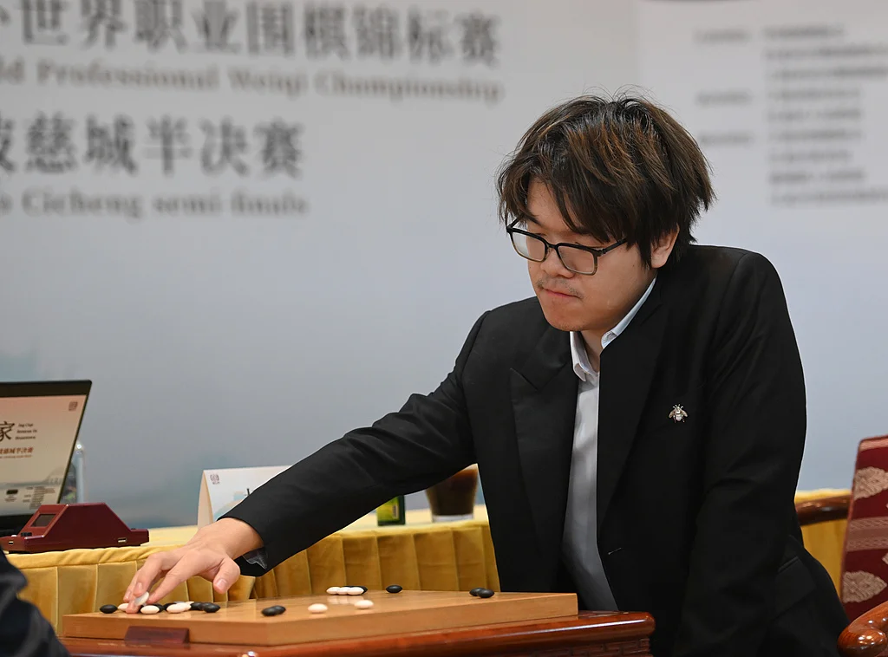

国际快讯
2025 年 1 月 23 日
中国围棋协会关于第29届LG杯决赛的声明
本文信息来源于 中国围棋协会

在1月23日进行的第29届LG杯世界围棋棋王战决赛第三局中，中国棋手柯洁九段因提子未及时置于棋盒盖，在之后的棋局关键处、轮到对手卞相壹九段落子时被现场裁判中断比赛。中国围棋协会认为裁判中断时机不当，影响比赛正常进行，棋手受到裁判过度干扰，无法继续完成比赛。经向赛事主办方韩国棋院申诉，申请重赛无果，中国围棋协会不接受本届LG杯第三局结果。
特此声明。
信息来源：中国围棋协会